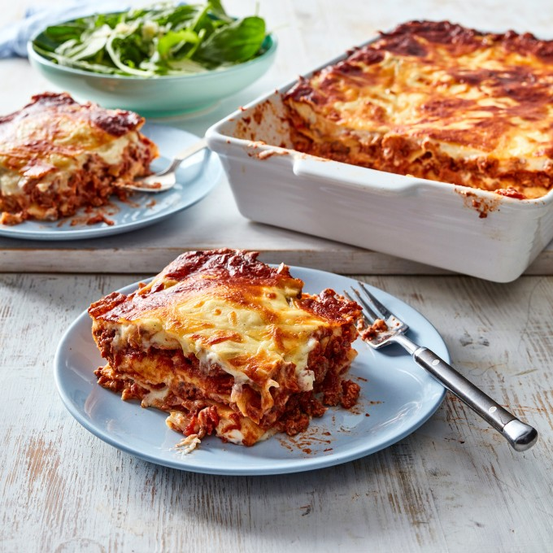

Beef Lasagne

Description
A staple in almost all households, this beef lasagne is a must on your dinner table tonight, (and every night!)
From its rich beef bolognese, to the creamy bachemel all layered between tender pasta sheets and topped with
freshly grated mozzarella and parmesan that broiled to crispy, cheesy perfection.
It really is no wonder why this dish is loved by all (including a particular chubby ginger cat ;))
Ingredients
Bolognese Sauce
- 1 tbsp. olive oil
- 1 onion, finely chopped
- 2 celery stalks, finely chopped
- 2 garlic cloves, crushed
- 1 kg beef mince
- 1/2 cup (110 g) tomato paste
- 3/4 cup (185 ml) beef or vegetable stock
- 1 x 400g can diced tomatoes
- 1 x 700g bottle tomato passata
Bechamel Sauce
- 1L (4 cups) milk
- 1 brown onion, halved, coarsely chopped
- 8 fresh parsley stalks
- 8 whole black peppercorns
- 4 whole cloves
- 2 bay leaves
- 3 tbsps. (60g) salted butter
- 1/2 cup (50g) plain flour
- 1 cup (100g) parmesan, grated
- Pinch of ground nutmeg, salt and pepper, to taste
Lasagne
- Olive oil, extra, to grease
- 5 fresh lasagne sheets
- 1 cup (90g) mozzarella, grated
- 1/2 cup (50g) parmesan, grated
Steps
Bolognese Sauce
-
To make the Bolognese, heat the oil in a large heavy based saucepan over medium heat. Add the onion, celery and garlic and cook, stirring, for 5 minutes or until onion softens. Add mince and cook, stirring to break up lumps for 5 minutes or until browned
-
Add the tomato paste and stock to mince mixture and bring to the boil. Reduce heat and simmer for 5 minutes or until stock reduces slightly
-
Add the diced tomato and passata and simmer, stirring occasionally, for 45 minutes or until sauce thickens
Bechamel Sauce
-
Meanwhile, to make the bechamel sauce, combine the milk, onion, parsley stalks, peppercorns, cloves and bay leaves in a medium saucepan and bring to a simmer over medium heat. Remove from heat and set aside for 15 minutes to infuse. Strain the milk mixture through a fine sieve into a large jug. Discard solids
-
Melt the butter in a large saucepan over medium-high heat until foaming. Add the flour and cook, stirring, for 1-2 minutes or until mixture bubbles and begins to come away from the side of the pan. Remove from heat
-
Add half of the milk mixture, whisking continuously. Place pan back on medium-high heat. Whisk until thick. Add the rest of the milk, whisking continuously. Bring the sauce to a boil. Reduce the heat and simmer for five minutes, using a wooden spoon or spatula to stir continuously
-
Add the parmesan and stir until cheese melts. Taste and season with nutmeg, salt and pepper, as desired
Lasagne
-
Preheat oven to 180°C / 160°C fan-forced. Brush a rectangular 3 L (12 cup capacity) ovenproof dish with oil to lightly grease
-
Spread ¼ of the bechamel over the base of the prepared dish. Arrange lasagne sheet over the sauce. Top with ⅓ of the bolognese and ⅓ of the remaining bechamel. Continue layering with the remaining lasagne sheets, bolognese and bechamel, finishing with a layer of bechamel. Sprinkle with mozzarella and parmesan
-
Bake in preheated oven for 40 minutes or until cheese melts, is golden brown, and the edges are bubbling. Remove from oven and set aside for at least 15 minutes to set
-
Cut the lasagne into 8 portions and serve with mixed salad leaves